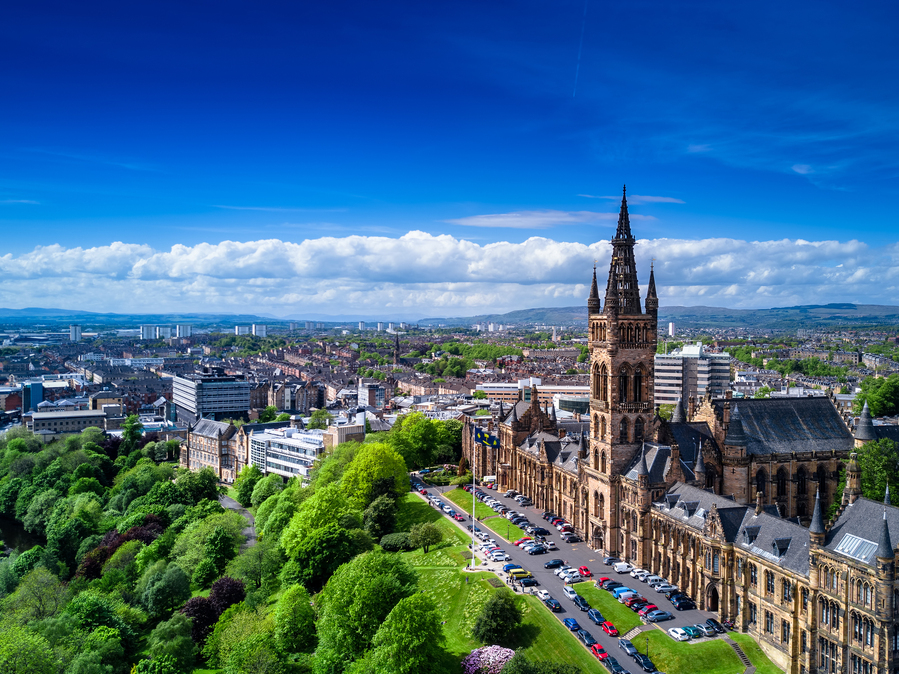

Лондон
Лондон — столиця Англії та Великої Британії, одне з найбільших міст Європи, що є світовим центром культури, музики, освіти, моди, політики, фінансів і торгівлі. Населення становило 8 800 000 осіб, а з передмістями близько 10 000 000. Це яскравий і галасливий мегаполіс з динамічним життям і чудовою космополітичною атмосферою. Лондон — одне з найдавніших міст Європи, яке має дивовижну концентрацію різних пам’яток, пам’яток історії та культури: розкішні палаци, історичні будівлі, вежі, мости, старовинні церкви, атракціони та >музеї світового рівня.
Лондон був заснований за часів Римської імперії та протягом своєї багатої історії був одним з найважливіших міст Європи. Сюди стікалися всі багатства Сполученого Королівства, тому його столиця має чудові пам’ятки самих різних історичних епох. Лондон — одне з найбільш багатогранних міст у світі, яке увібрало в себе не тільки традиції Британії, а й культури багатьох національностей і народів. Це місце приголомшливого різноманіття, яке можна відкривати та досліджувати нескінченно.
Манчестер
Манчестер (англ. Manchester) — велике місто у Великій Британії, розташоване на північному заході Англії.Центральне місто урбаністичної території, знаної як Великий Манчестер. Населення Манчестера становить 545 500 осіб. Населення Великого Манчестера становить 2 702 209 .Це комерційна і культурна столиця Ланкаширу, великий індустріальний центр і морський порт. Коли Манчестер був одним з головних двигунів Промислової революції, називався “столицею англійської Півночі” і був містом фабрик і робітників. Тепер же він є центром культури та мистецтва, ЗМІ та освіти з безліччю розважальних і спортивних споруд, які значно підвищили його туристичну привабливість.
Місто розташований в Північно-Західній Англії в 336 км (209 милях) від Лондона. Місто знаходиться на річці Еруелл на західному схилі невисоких Пеннінських гір. Клімат — помірний морський з прохолодним літом і м’якою зимою.
Був вперше згаданий в 10 столітті, хоча його джерела йдуть в епоху римлян і кельтів. Середньовічне поселення виникло на місці кельтського Мансеніона і римського військового табору 1 століття н. е. Манкуніума. У Середньовіччі Манчестер був важливим торговим містом з безліччю ремісничих майстерень.

Бірмінгем
Бірмінгем - друге за величиною місто Великобританії та Англії, центр графства Уест-Мідлендс. Колись флагман промислової революції, тепер це сучасний мегаполіс з яскравим культурним життям. Проживає тут 1 000 137 жителів. Бірмінгем — це місто з важливою індустріальною спадщиною і багатою історією, який у вікторіанську епоху носив прізвисько “майстерня світу” і “місто 1000 ремесел”. Його найважливішою рисою вважається велика мережа каналів, що є свідченням минулого промислового розвитку. Каналів в Бірмінгемі більше, ніж у Венеції та Амстердамі. На жаль, історичний центр міста був значно зруйнований під час Другої світової війни, а сучасна архітектура сильно спотворила вигляд міста.
Бірмінгем як поселення був заснований в 6 – 7 столітті. Сучасна назва походить від давньоанглійського Beormingahām, що означає “будинок” або “село”. Перші згадки про місто датуються 1166 роком. До 13 століття Бірмінгем став великим торговим центром і прославився своїми ярмарками.
У 20 столітті місто стає великим центром військової промисловості. Це стало причиною масованих бомбардувань міста німецькою авіацією, які значно пошкодили історичний центр.
Глазго
Глазго — найбільше місто Шотландії, розташоване на північному заході Великобританії, на берегах річки Клайд.Населення 580 690 людей. Це один з головних культурних центрів Сполученого Королівства (якщо винести за дужки Лондон) з типовим шотландським шармом і прекрасною архітектурою. Глазго — це зразок грамотного сучасного містобудування, колись в минулому великий промисловий центр був перетворений в популярний туристичний напрямок зі збереженням історичного вигляду. Це прекрасне зелене місто з безліччю парків, музеями, магазинами та пам’ятками від Середньовіччя до наших днів.
Місто було заснований в кінці 6 ст. і пройшов шлях від невеликого сільського поселення до найбільшого морського порту Шотландії. За легендою місто було засноване св. Мунго, який побудував на березі річки Молендинар монастир (зараз на цьому місці розташовується кафедральний собор). Перші письмові згадки датуються 12 століттям. До кінця цього століття місто стало важливим релігійним центром. Між 1175 та 1178 роками Глазго отримав міські права і право на торгівлю, що сприяло зростанню і розвитку міста. У 1451 році тут був заснований університет, який є одним з найстаріших у Великій Британії.

Ліверпуль
Ліверпуль — місто на заході Великої Британії, столиця графства Мерсісайд. Населення місьа 513 441 осіб Це один з головних британських портів, відомий своєю культурою, музикою, футболом і численними пабами. Ліверпуль — це велике, динамічне місто, яке є місцем “народження” легендарної групи The Beatles і має чудову рок-н-рольну атмосферу. Це серце Мерсисайду з однією з найбільших у світі гаваней, яка є одним з центрів трансатлантичного судноплавства. Сучасний Ліверпуль — великий торговий, освітній і фінансовий центр, а також популярний туристичний напрямок.
Ліверпуль розташований на північно-західному узбережжі Англії на східному березі річки Мерсі. Місто лежить на піщаних пагорбах і має помірний морський клімат. Ліверпуль має прохолодне літо, дощову осінь і порівняно м’яку зиму з рідкісними морозами.
Перші згадки про Ліверпуль датуються 12 століттям. На початку 13 століття поселення отримало статус боро. У 14 – 16 століттях Ліверпуль був невеликий селом з населенням кілька сотень жителів. Його значення стало зростати в 17 столітті з розвитком трансатлантичної торгівлі. До 19 століття Ліверпуль став одним з найбільших у світі портів і центром (поряд з Манчестером) промислової революції в Британії. У 1880 році він отримав статус міста.
Саутгемптон
Саутге́мптон — місто і порт на південному узбережжі Англії, на березі Ла-Манша. Iсторія міста починається 70 р. н. е. під ім'ям Клаусентрум (Clausentum). Cаутгемтнон це місто зі 222 000 населенням. Це місто мало стратегічне значення як гавань для більших міст Солсбері та Вінчестер. Після норманського вторгнення 1066 р. значення міста підвищилося — сусіднє місто Вінчестер стало столицею Англії, а Саутгемптон — найважливішим портом країни. З початком поширення британського впливу в Азії та Північній Америці гавань почала втрачати своє значення через вигідне розташування таких портів, як Плімут та Ліверпуль. У 17 столітті місто стало улюбленим місцем відпочинку, однак швидко втратило свої позиції коли почала зростати популярність іншого міста — Брайтон.
Розквіт міста почався в середині 19 століття, коли декілька суднобудівних верфів було засновано в Саутгемптоні. Суднобудування стало найважливішою галуззю індустрії і гавань розбудувалася завдяки зростаючій торгівлі з Північною Америкою. У 1907 р. Уайт Стар Лайн заснував тут свою штабквартиру, а пізніше компанія Кунард також прибула в місто. Перед Другою світовою війною тут був збудований аеропорт і декілька фабрик. Під час Другої світової війни в передмісті Саутгемптона (авіабудівна компанія Supermarine Aviation Works, Ltd) будували літаки Спітфайр. Хоча місто й було дещо зруйноване під час бомбардувань, його знову відбудували і ще збільшили — були побудовані нові сучасні будинки, новий аеропорт.
Ньюкасл-на-Тайні
Ньюкасл-на-Тайні - місто на північному сході Англії, адміністративний центр графства Тайн-енд-Вір. За даними 2017 року в місті проживає 271 600 осіб.
Своєю назвою, а Ньюкасл перекладається українською як «Новий замок», місто завдячує замку, збудованому (1080) Робертом ІІ, герцогом Норманським, старшим сином Вільгельма Завойовника. Новий замок замінив собою старі фортифікаційні споруди римлян, за яких місцеве поселення називалося Понс Еліус. Місто зростало як центр деревообробної промисловості, пізніше стало центром вугільного басейну. Порт розвинувся у 16 столітті й разом з верфями нижче по течії річки став одним з найбільших світових кораблебудівних і корабелеремонтних центрів. Ці галузі промисловості з тих часів зазнали занепаду, тому місто зараз є в основному бізнесовим та культурним центром, з особливою репутацією щодо нічного життя. Місто найзнаменитіше коричневим елем — головним видом пива, мальовничим мостом через річку Тайн та футбольною командою Ньюкасл Юнайтед з Прем'єр-ліги. Місто приймало найпопулярніший у світі півмарафон — Великий північний забіг, починаючи з 1981 року. Місто займає 16 місце по населенню у Сполученому королівстві, у той час коли більша Тайнсайдська конурбація, частиною якої є Ньюкасл, займає шосте місце за населенням серед конурбацій Сполученого королівства. Ньюкасл є членом Групи Основних Міст Англії, та разом з Ґейтсхед в мережі європейських міст Євросіті. Місцевий люд називається джорді.
Единбург
Единбург – столиця Шотландії й одне з найбільших міст на півночі Великої Британії. Населення міста становить 471 650 осіб. Є місцем, що об’єднав старовину і сучасність в унікальній шотландській атмосфері. Единбург — це одне з найкрасивіших міст Сполученого Королівства зі значним середньовічним замком, ширяє над ним на високій скелястій вершині, і дивовижною середньовічною готичною архітектурою, з якою сусідять чудові зразки сучасного будівництва. Це справжній центр історії, культури та мистецтва, який визнаний найкращим місцем для життя у Великобританії.
Единбург розташований в північно-східній частині Великої Британії на сході Шотландії в 650 км від Лондона. Місто знаходиться на узбережжі Північного моря між долиною річки Лейт і схилами невисоких гір Салісбері-Крег. Клімат — помірний морський з прохолодним літом і м’якою зимою. У теплу пору року можливі часті зливи. Також в жовтні та березні погоду формують атлантичні циклони, які викликають дощі. Единбург розташований на території Середньошотландської низовини, рельєф якої сформований вулканічними процесами та льодовиками.
Перші поселення на місці сучасного міста було засновано в 7 столітті. Сам Единбург був вперше згаданий в 12 столітті, коли шотландський король Давид I заснував тут церкву. Трохи пізніше був заснований також королівський замок. Після перенесення в Единбурзький замок королівської резиденції місто стало швидко рости та розвиватися. У 13 столітті Единбург офіційно став столицею Шотландії та залишався найважливішим містом королівства до початку 17 століття.
Белфаст
Белфаст — місто у Великій Британії та столиця Північної Ірландії. Це колись потужний центр суднобудування, на верфях якого був побудований легендарний Титанік. Белфаст — це місто з чудовою ірландською атмосферою та 285 000 людьми, багатою історією, яскравим культурним життям і чарівним провінційним шармом. Попри шрами недавніх військових конфліктів (між урядовими військами та ірландськими націоналістами), зараз столиця Північної Ірландії живе мирним життям і є одним з найбезпечніших місць Британії. Белфаст приваблює все більше туристів своїми пам’ятками, красивою вікторіанською архітектурою, навколишніми природними пейзажами та цікавими культурними об’єктами.
Назва Белфаст походить від ірландського Béal Feirsde, що можна перекласти як “Брід на гирлі річки”. Фактично територія сучасного міста була заселена понад 5000 років тому. Фактично ж історія Белфаста почалася в 12 столітті, коли англійці побудували тут замок. Саме місто було засноване в 1609 році англійськими та шотландськими поселенцями.
У 17 столітті Белфаст був невеликим провінційним містечком, який торгував шерстю і сільськогосподарською продукцією. Стрімкий розвиток міста відбувся з початком трансатлантичної торгівлі. До кінця 19 століття Белфаст перетворився в один з найбільших центрів суднобудування в Європі. Також місто було одним з найбільших промислових центрів Ірландії. На початку 20 століття верфі Белфаста виконали ряд амбітних суднобудівних і та інженерних проєктів, серед яких будівництво Титаніка. Белфаст торкнулися такі військові конфлікти: війна за незалежність Ірландії (1920-1922 роки), Друга світова війна і смута 1970-1972 років.
Кардіф
Кардіфф – місто на південному заході Великої Британії та столиця Уельсу. Це великий індустріальний центр, який славиться багатою історією і чудовою валлійською атмосферою. Кардіфф — місто промислових підприємств і парків, чудового стародавнього замку і музеїв. Це відмінна відправна точка для подорожі по Уельсу і вивчення його красот. Населення міста становить 346 100 осіб
У 1 столітті до н. е. на території сучасного міста існувало поселення племені силурів. У 1 столітті н. е. в період правління імператора Веспасіана тут був побудований Римський форт, який через століття був перебудований для розміщення військового гарнізону. У 3 столітті цей укріплений табір був перебудований у фортецю, залишки якої видно досі. Після розпаду Римської імперії фортеця була занедбана. Про Кардіфф в період раннього Середньовіччя відомо дуже мало. В 11 столітті почалося будівництво нормандського замку на руїнах стародавнього римського форту. Цікаво, що спочатку місто належало англійській короні. На початку 15 століття під час повстання Гліндура замок і місто були практично зруйновані.
В 17 – 18 столітті місто розвивається як великий промисловий центр і морський порт. У 1905 році Кардіфф отримує міський статус. У 1955 році місто було оголошено столицею Уельсу.
Догори